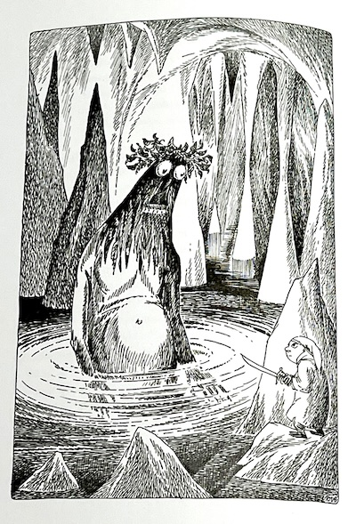

2024-07 | Maybe one’s vices cancel each other out, in the end.
Some things are really hard and other things are really easy. I’m reading the letters of Tove Jansson,
which are somehow both idyllic and substantive. The last such collections I read were from angsty
eloquent Prague bois (so, Franz Kafka and Karel Čapek), and they’re good (ok, excellent at points)
but I liked this better. It’s bracing to read the correspondence of queer woman born in 1914
who made satirical illustrations in an antifascist magazine as a teenager and found her life partner in her
forties and spent her days thinking mostly about doing creative work and caring about close people.
(There is also much drinking whiskey, and chopping wood on a remote Finnish island in the log cabin
she built by hand -- be your own manic pixie dream girl!)
The letters span 1932-1988 and are to parents, friends, partners, exes, exes' partners, etc,
and simultaneously full of depth and any
number of great paragraphs -- a non-representative sample:
»
You’ve gradually discovered what a boon solitude can be if one is peaceful of heart and able to work
(which amounts to the same thing?) Perhaps that very thing is the greatest happiness there is.
«
» If you also want to pay for a slap-up dinner at the Restaurant with a
private violinist and a rose seller before the dance, for half a dozen scattered ghosts*,
that’s OK – but just beware of doing any irregular dancing afterwards.
I’ve never had to write so many soothing letters in such a short space of time before –
and the matter wasn’t settled until Bitti took her new friend to Lundby, where Margareta fell
head over heels with the countess and was no longer friends with Bitti but intensely
interested in agriculture. « *{lesbians}
» I was so fed up with myself after the Aili session that went on until 3 in the morning
and was followed by such a mournful and unproductive day that I decided to give up all my
sundowners and shots of schnapps while I work and dinner vodkas and see whether I felt
less tired and a bit brighter in the bonce. After five days’ abstinence I honestly can’t feel a thing,
except for a slight headache that wasn’t there before. Oh well, alcohol dilates the veins and nicotine contracts them.
Maybe one’s vices cancel each other out, in the end. But I shall carry on now, for the sake of my self-esteem if nothing else.
And who knows, it might make me more beautiful.«
• A quick biography of Tove Jansson can be found on
Queer as Fact, which I've been listening to lately -
it's the good combination of light/well-researched/well-paced/funny. (They also have episodes about the spicy spreadsheets (!)
of John Maynard Keynes and the long list of absolutely batshit escapades that Mary Shelley got up to in the 1800s.)
• On the topic of beverages, J’s
treatise
on nonalcoholic beers is glorious on all fronts
(in Czech, but I., who doesn't speak Czech, liked the pictures).
• A few nice remote-and-not-so-remote trips reminded me of the following life hack: adding hot chocolate powder to
campstove instant coffee transforms a beverage of grim
necessity to one of unassuming luxury (Bulk Barn has a salted caramel one that makes this particularly true).
• M and I are leaning into Sardine Summer, in which we try various brands of sardines in a semi-civilized manner on rocks under
the July sun, vaguely messy but thoroughly satisfying.
(That's it, that's all there's to Sardine Summer; Sardine Summer is great.) There may be a spreadsheet at some point, but so far,
Safe Catch win on taste
while Brunswick probably win on economy. (Old Man Luedecke has a
song
about Brunswick sardines that is both endearing and hard to get out of head: A Brunswick can is a master plan //
for a lunch as grand as Grand Manan. OML is anyway full of treasures for those days whose mood calls for banjo and
first-order, almost naive, wholesomeness.)
• I guess it's the Olympics? Anyway I am now firmly a fan
ofPommel Horse Guy
-- the goofy ADHD weirdo who solves Rubik's cubes in nine seconds & just sort of chills at the Olympics
with his eyes closed until it's his turn to do his job,
which is pommel horse, and then he does so well that it's the first medal for his team in 16 years. Nice.
• We saw Ian Van Der Wee
play a very small house show. House shows are almost always wholesome and fuzzy in a number of dimensions,
maybe not many are transcendent. This one was.

Tove Jansson illustrates Gollum: "I’m illustrating Tolkien at top speed, all the vignettes and thumbnails are done and now
I’m onto the whole-page illustrations. I drew some of the smaller pictures 60–80 times before they started to “flow”.
It’s damned depressing how one can get so stuck on something one is “expert” at."